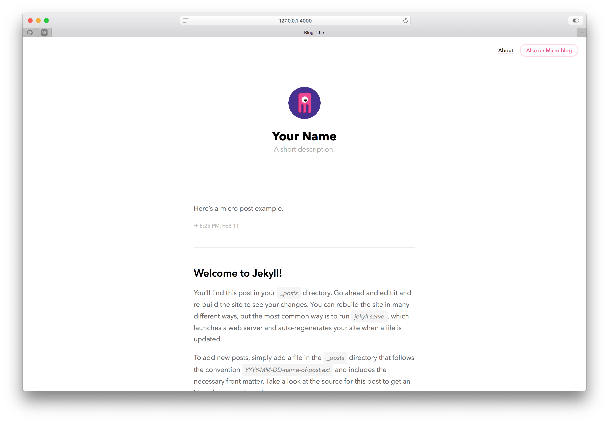

This is just Manton Reece’s Marfa theme for Hugo with the references to micro.blog removed, in case you want to use it as a clean, unpromoted theme.
Here’s the README.md from his original theme:

This Jekyll theme started as a port of Cactus to my own needs, but I ended up performing a lot more modifications than expected. Some people reached me out and asked if I could share it, so here we are.
To start your project, fork this respository, put in your content, and go!